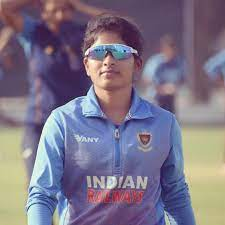

BATTERS
Harmanpreet Kaur Dhara Gujjar
BOWLERS
Saika Ishaque Sonam yadav
WICKET KEEPER
Yastika Bhatia Priyanka Bala
ALL ROUNDERS
Pooja Vastrakar Amanjot Kaur Humaira Kazi Neelam Bisht
Jintimani Kalita Heather Graham Issy Wong Hayley Matthews
Chloe Tryon Nat Sciver Brunt Amelia Kerr